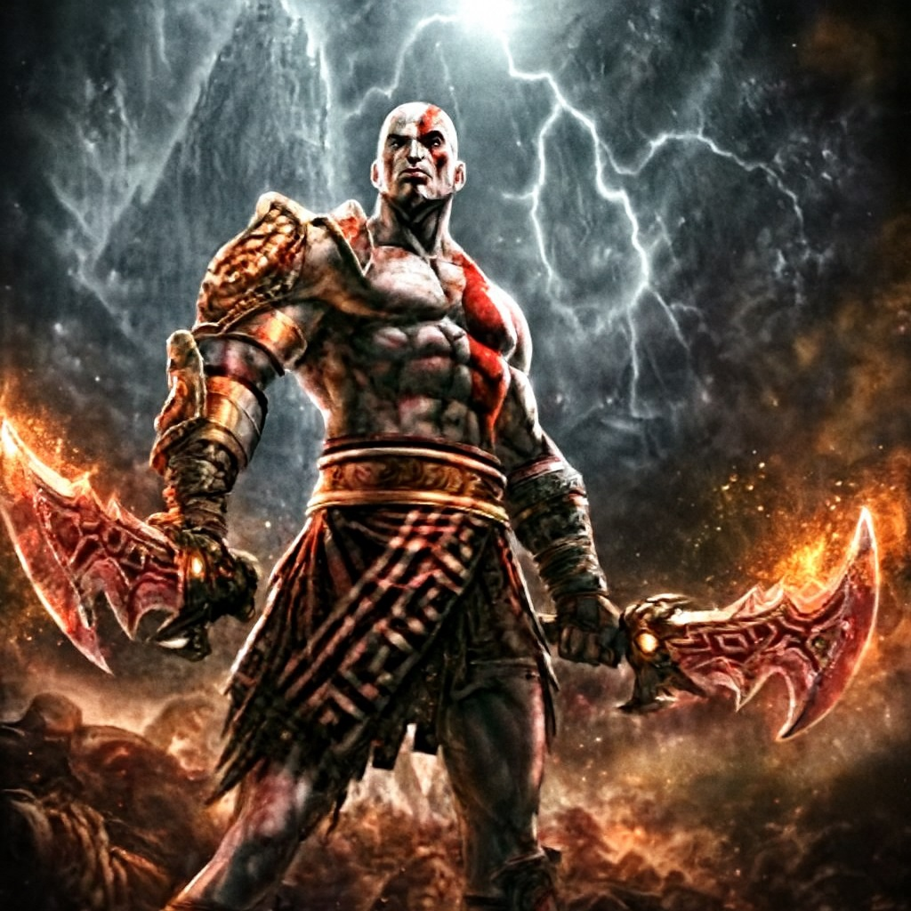

¡Bienvenido a nuestra aventura gráfica!
¡Bienvenidos! En esta página los invitamos a recorrer un espacio pensado para descubrir, jugar y dejarse llevar por la curiosidad.
Los invitamos a acompañarnos en esta aventura gráfica, donde cada sección es una nueva parte del camino y cada detalle suma a la historia que queremos contar. Ojalá disfruten el recorrido tanto como nosotros disfrutamos crearlo.
Temática: Mitología
Es un tema que nos llamó la atención por la cantidad de historias, personajes y simbolismos que tiene. La historia se centra en Kratos, aunque es conocido principalmente por los videojuegos de God of War, el personaje está inspirado en elementos reales de la mitología griega y, en las entregas más recientes, también en la nórdica.
¿Quién es Kratos?

Es el protagonista principal de la serie de videojuegos God of War. Se le conoce como "El Fantasma de Esparta". Es un semidiós, hijo de Zeus y una mujer mortal llamada Calisto. Un guerrero espartano que asciende rápidamente en la milicia y se convierte en el capitán de un ejército.A lo largo de los juegos, lucha contra dioses, monstruos y titanes, se convierte en el nuevo Dios de la Guerra y luego viaja a las tierras nórdicas. Es un personaje complejo, que lucha con su pasado violento y su ira. A lo largo de la serie, Kratos se embarca en varias aventuras en un intento por evitar un desastre o cambiar su destino. se lo presenta como ajeno a todo lo demás y arrogante en la naturaleza. A menudo se involucra en actividades moralmente ambiguas y realiza actos de extrema violencia.
Podés probar el programa que hicimos acá mismo:
O presionando este botón:
Información
Proceso de producción
Diagrama de flujo: Armamos un mapa con los distintos caminos/recorridos que puede hacer el jugador. Recursos: Utilizamos distintas ias para la creacion de las imagenes de fondo y de la historia para plasmar la vision que teníamos. Se utilizó un soundtrack de The Elder Scrolls: Oblivion como sonido de fondo.
P5.jS: Programamos la lógica interactiva, el manejo de estados, los botones y el sonido para activar/desactivar. Prueba: Verificamos que los botones funcionaran correctamente, que la historia tenga la cronología correcta y que el sonido funcione bien.
Luz Rodríguez Calderón
Se encargó de crear la base del programa, el diagrama de flujo con todos los caminos y finales, el flujo de estados, crear una cronología que logre darle coherencia a la historia así como una estética visual que acompañe el relato.
Valentín San Román
Programó la lógica de los botones, se encargó del sonido así como verificar que funcionaran correctamente, preparó las imagenes y las agregó dentro del código, de modo que se pudieran utilizar en cualquier momento.